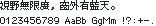

字样资料 / M+ BITMAP
M+ BITMAP 10 dot（原生单元 10×11）
样文完整 · 10×11 · 繁体
放大观察 · 3×

原尺寸 · 1×
来源与字样信息
- 家族
- M+ BITMAP
- 字符框
- 10×11 px
- 字符范围
- 繁体
- 样本文字
- 視野無限廣，窗外有藍天。
- 拉丁样文
- 0123456789 AaBb GgMm !?:+-.
- 覆盖说明
- 样文完整
- 缺字
- 本次样本文字未发现缺字；不代表完整字库覆盖
- 风格
- 未分类
- 用途
- 像素字体
- 字形来源
- 原生 BDF 点阵；JIS X 0208 码位按 Unicode 精确匹配；拉丁字使用同家族配套 BDF，不借用其他字体。 原文件：mplus_j10r.bdf + mplus_h10r.bdf。 本次修订：按原字库提取繁简对应字与实际显示码位；
- 授权状态
- 已有许可线索
- 许可说明
- 原包 LICENSE_E 允许无限制商用、非商用、复制、分发及修改，按原样提供无担保。
- 说明
- 统一新样文；拉丁字宽按源字体保留，可能为全角、半角或原生不等宽。样文覆盖不代表完整字库覆盖。
- 来源
- 来源项目 / 资料页
- 原生证据
说明：直接读取原始点阵文件中的像素，未使用普通矢量轮廓取模。
查看原生设计来源
仅展示固定字样，不提供字体文件。预览不授予字体使用许可；样文覆盖不等于完整字库覆盖，实际使用前请核实来源项目的适用授权。